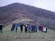
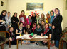
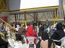
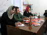
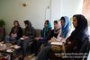
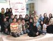
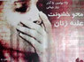
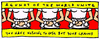

- 7 اسفند 1391
- 18 اسفند 1388

گزارش گرامی داشت 8 مارس در رشت
- 25 مرداد 1388

- 10 مرداد 1388
کمپین رشت
- 19 تیر 1388
گزارشی از تجمعات دانشجویی در دانشگاه گیلان
صبا حمیدی
- 17 خرداد 1388

روایتی در باره قوانین تبعیض آمیز از بند مردان زندان اوین
کاوه مظفری
- 4 خرداد 1388
محمد غزنویان
- 25 اردیبهشت 1388

در جهت آگاهی بخشی و توانمند سازی زنان
کمپین رشت
- 16 اردیبهشت 1388

آخرین قسمت گزارش نشست اصفهان
تغییر برای برابری در اصفهان
- 6 اردیبهشت 1388

نشست کمپین در اصفهان
کمپین اصفهان
- 1 اردیبهشت 1388

پنل گرامی داشت روز جهانی زن در رشت
کمپین رشت
- 22 فروردین 1388

در ميزگردي با حضور اعضاي كمپين در شهرهاي مختلف عنوان شد
تنظيم از زهره اسدپور
- 9 فروردین 1388

گزارش دومین روز نشست در اصفهان
تغییر برای برابری در اصفهان
- 29 اسفند 1387
گزارشی از تهیه چهلتکه در اعتراض به خشونت های ناموسی علیه زنان در کردستان
نینا وباب
- 23 اسفند 1387

گزارش روز دوم نشست در اصفهان
تغییر برای برابری در اصفهان
- 21 اسفند 1387
نشست کمپین به مناسبت 8 مارس
تغییر برای برابری در اصفهان
- 16 اسفند 1387
نگاهی گذرا به یکسال گذشته
نینا وباب
- 30 بهمن 1387
گزارش از شهرها
ژیلا گل عنبر
- 17 بهمن 1387
6 فوریه، روز جهانی مقابله با ناقص سازی زنان(ختنه)
زهره اسدپور
- 5 بهمن 1387

گزارش کمپین
جمعی از فعالین کمپین در کرمان
- 23 دی 1387
گزارش کمپین
جمعی از فعالین کمپین در مشهد
- 10 دی 1387
کمپین خارج از مرزهای ایران
زهره اسدپور
- 30 آذر 1387
کارزار های زنان خاورمیانه
ترجمه عبداللطیف عبادی
- 22 آذر 1387
گزارش کمپین
مزگان ثروتی
- 10 آذر 1387
مصاحبه با خانم دکتر حیفا ابوغزاله
ترجمه عبداللطیف عبادی
- 5 آذر 1387

بزرگداشت روز جهانی محو خشونت علیه زنان در رشت
زهره اسدپور
- 21 آبان 1387
کمپین در سنندج
ژینا مدرسی
- 11 آبان 1387
کمپین یک میلیون امضا در مراکش
ترجمه : منیره کاظمی
- 5 آبان 1387

کمپین آگونات
ترجمه : زهرا مالکی
- 27 مهر 1387
کمپین در تجربه ی اعضا
هایده تابش